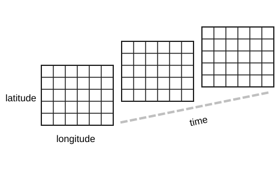

Week 3 (CS 418 @ UIC)
Week 3 Slide Deck
Wrangling, Filtering; Formats
Jack Bandy 2026
Data Formats
How Do We Store This Data?
Spreadsheet??
- You’ve probably seen lots of spreadsheets
- Grid with cells, rows, columns (and sheets/tabs)
- Excel, Google Sheets, Numbers, LibreOffice Calc, etc.
- Convenient for manual entry, review, sharing
- But data scientists don’t keep data in spreadsheets…
| A | B | C | D | E | |
|---|---|---|---|---|---|
| 1 | name | company | street | city | phone |
| 2 | Tyler Durden | Paper Street Soap Co. | 537 Paper Street | Bradford | (288) 555-0153 |
Why Not Spreadsheets?
- Formulas and transformations are hidden inside cells
- Data types, missing values can be ambiguous
- Auto-formatting can corrupt values (e.g., gene name “SEPT2” becomes a date)[6]
- Errors can go undetected for years without automated testing [7,8]
- No separation between data, logic, and presentation
- Version control can be more difficult
- Sharing files -> accidental overwrites, conflicts
- Larger datasets become slow
CSV
- Comma-separated values
- Plain-text table: one row per record, one delimiter between fields
- Often used for spreadsheets, exports, and simple datasets
- Easy to inspect
- types and hierarchy are usually implicit
TSV
JSON
- JavaScript Object Notation
- Text format for data interchange
- Built from objects, arrays, strings, numbers, booleans, and null
- Common for web APIs and configuration files
XML
- Extensible Markup Language
- Nested tags represent elements and attributes
- Verbose, but widely used by older document systems
- E.g. Excel uses xml under the hood
<?xml version="1.0" encoding="UTF-8"?>
<person>
<name>Tyler Durden</name>
<company>Paper Street Soap Co.</company>
<product>All Natural Handmade</product>
<address>
<street>537 Paper Street</street>
<city>Bradford</city>
<postalCode>19808</postalCode>
</address>
<phone>(288) 555-0153</phone>
</person>YAML
- YAML Ain’t Markup Language
- Human-readable format based on indentation
- Supports mappings, lists, scalars, and comments
- Common for configuration files and data pipelines
Parquet
- Binary columnar storage format
- Efficient for large datasets
- Stores schema and data types with the data
- Common in Spark, DuckDB, Polars, and “data lakes”
message business_card {
required binary name (STRING);
required binary company (STRING);
required binary product (STRING);
required binary street (STRING);
required binary city (STRING);
required binary postalCode (STRING);
required binary phone (STRING);
}
row 1:
Tyler Durden | Paper Street Soap Co. | All Natural Handmade |
537 Paper Street | Bradford | 19808 | (288) 555-0153What About More Complex Data?

NetCDF
- Network Common Data Form
- Binary, self-describing format for array-oriented scientific data
- Stores dimensions, variables, and metadata together
- Better than CSV or JSON for gridded data with coordinates
- Common in scientific workflows (e.g. climate, ocean, weather)
- Harder to quickly inspect than plain text formats
- (Data stored as binary)
Format Summary
| Format | Best fit | Short example |
|---|---|---|
| CSV | Flat tables, spreadsheet exports, simple datasets | name,company,phoneTyler Durden,Paper Street Soap Co.,(288) 555-0153 |
| TSV | Flat text tables where commas may appear in fields | name company phone |
| JSON | APIs, nested records, web data | {"name":"Tyler Durden","city":"Bradford"} |
| XML | Document-like data with tags and attributes | <name>Tyler Durden</name> |
| YAML | Human-edited configuration and pipeline settings | name: Tyler Durdencity: Bradford |
| NetCDF | Labeled multi-dimensional scientific arrays | temperature(time, lat, lon) |
| Parquet | Typed, compressed analytics data | name: STRINGcity: STRING |
| Spreadsheet | Small, early-stage data; prototypes; manual entry | (Excel, Google Sheets, Numbers) |
Sources
- GitHub source: https://github.com/jackbandy/data-science-fun/blob/main/docs/slides/week3.md.
- NetCDF reference: Unidata netCDF documentation, https://www.unidata.ucar.edu/software/netcdf/.
- LearningDS chapter 14, “Web Data,” netCDF discussion: https://learningds.org/ch/14/web_netCDF.html.
- Format examples adapted from Wikipedia and project documentation: JSON, XML, Comma-separated values, YAML, Tab-separated values, Spreadsheet, and Apache Parquet.
- Tyler Durden business card image: Wikimedia Commons remake by Michaelpreid, modified, CC BY-SA 4.0, https://commons.wikimedia.org/wiki/File:Tyler_Durden_Business_Card.png.
- Ziemann M., Eren Y., El-Osta A., “Gene name errors are widespread in the scientific literature,” Genome Biology 17, 177 (2016): https://link.springer.com/article/10.1186/s13059-016-1044-7.
- European Spreadsheet Risks Interest Group (EuSpRIG), Horror Stories — a catalogue of real-world spreadsheet errors in business, government, and research: https://eusprig.org/research-info/horror-stories/.
- Inman, Phillip, “The Reinhart-Rogoff error — or how not to Excel at economics,” The Conversation, 2013: https://theconversation.com/the-reinhart-rogoff-error-or-how-not-to-excel-at-economics-13646.
- Slides developed using materials from Elena Zheleva and Gonzalo Bello Lander, the Berkeley DS 100 team, Marine Carpuat, and Brian Ziebart.
- Slide deck built with Quarto revealjs.
- Title font is Big Shoulders; Body font is Libre Franklin.
{kind=link}

 CS 418, Intro to Data Science, Week 3dodatascience.fun/slides/week3
CS 418, Intro to Data Science, Week 3dodatascience.fun/slides/week3